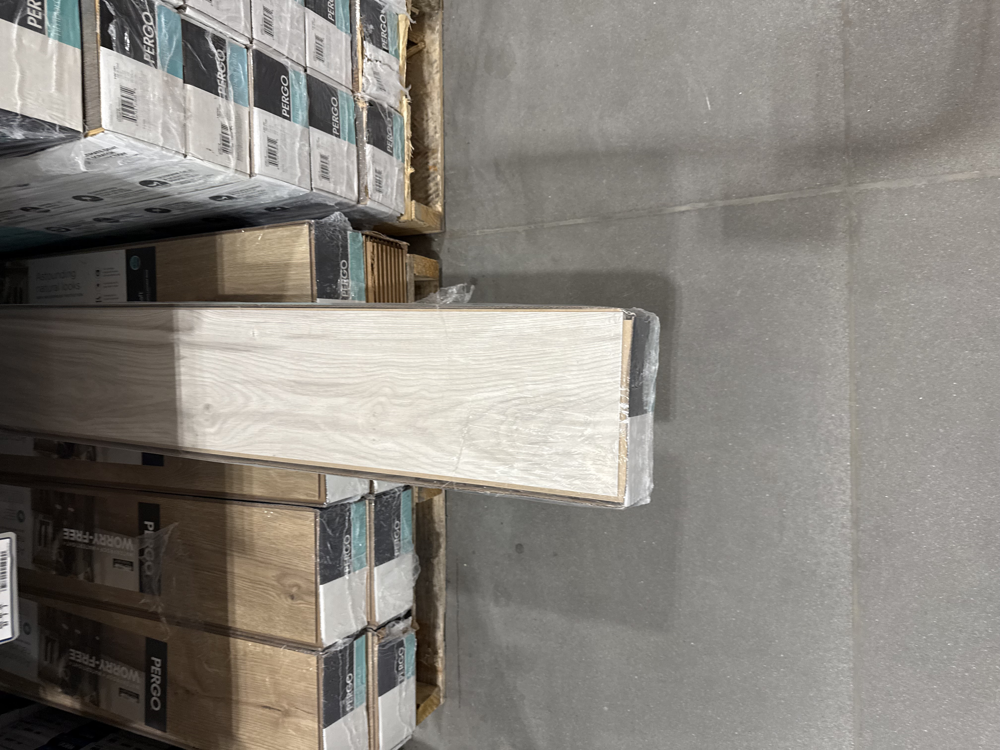
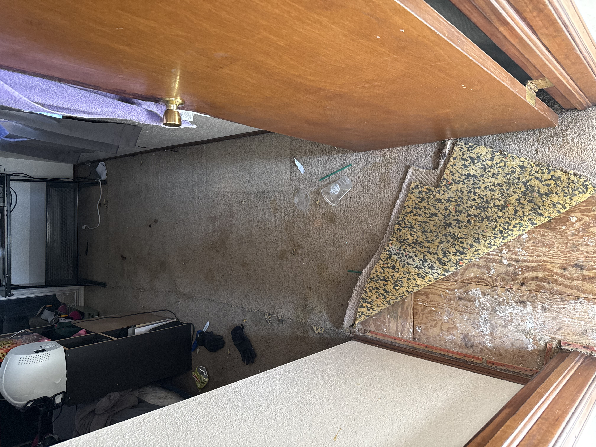
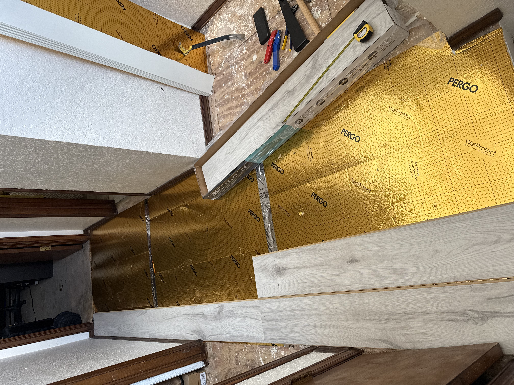
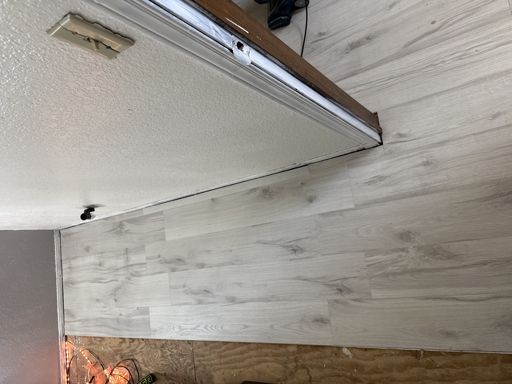
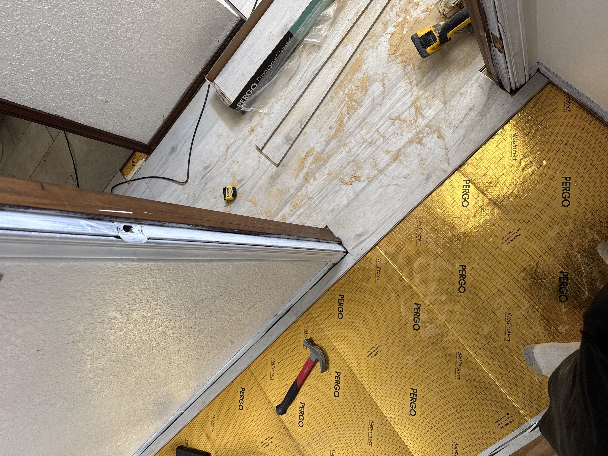
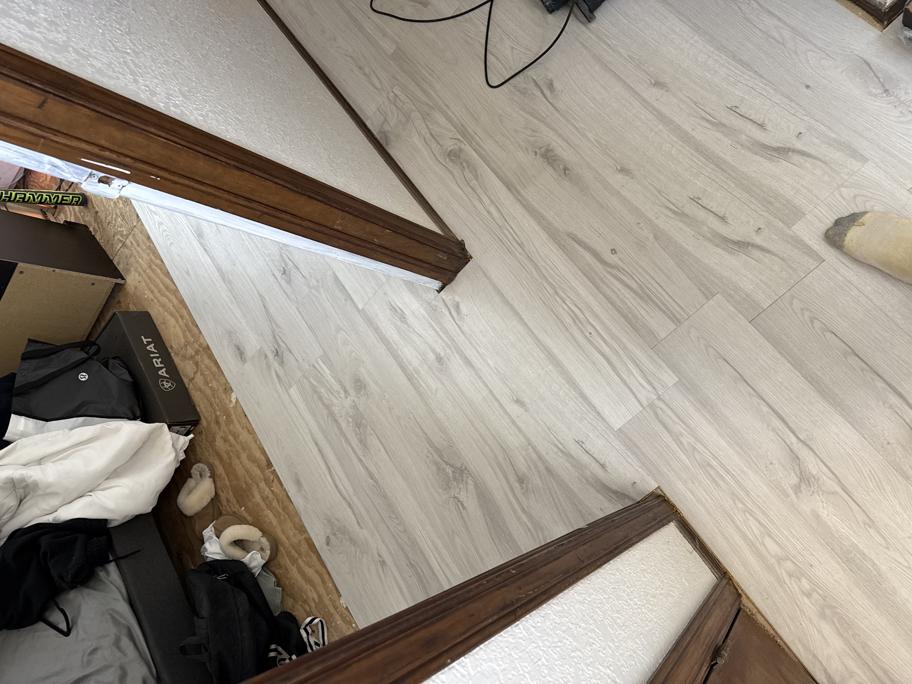

DIY Flooring Installation
This is a step-by-step guide to installing new flooring in your home. I will be documenting the process of installing new flooring in my home and sharing tips and photos along the way. I hope that this guide will inspire others to take on their own DIY home improvement projects and create a space that they love!

STEP 1: Select Flooring Style
I chose to go with a light wood look for my flooring. I wanted something that would brighten up the space and give it a modern look. There are many different styles of flooring to choose from such as hardwood, laminate, vinyl, and tile. I recommend doing some research and visiting a flooring store to see the different options in person before making a decision.

STEP 2: Remove Old Flooring
This step can be time-consuming and labor-intensive, but it is important to do it properly to ensure a smooth installation process. I used a pry bar and a hammer to remove the old flooring. Make sure to wear protective gear such as gloves and safety glasses when doing this step. It is also important to dispose of the old flooring properly, as it may contain hazardous materials such as asbestos.

STEP 3: Install Underlayment
Underlayment is a layer of material that is installed between the subfloor and the flooring. It provides a smooth surface for the flooring to be installed on and can also help with soundproofing and insulation. I used a foam underlayment for my flooring installation. Make sure to follow the manufacturer's instructions for installing the underlayment, as it may vary depending on the type of flooring you are installing.

STEP 4: Begin Flooring Installation
This is the most exciting part of the process! I started by laying out the flooring in the room to get an idea of how it would look and to make sure I had enough material. I then started installing the flooring, starting from one corner of the room and working my way across. Make sure to follow the manufacturer's instructions for installing the flooring, as it may vary depending on the type of flooring you are installing. It is also important to use the proper tools and techniques to ensure a successful installation.

STEP 5: Measure and Cut Flooring
As you install the flooring, you will need to measure and cut pieces to fit around corners, doorways, and other obstacles. I used a miter saw to make precise cuts for my flooring installation. Make sure to measure twice and cut once to avoid wasting material. It is also important to use the proper safety precautions when using power tools.

STEP 6: Complete Flooring Installation
Once you have installed all of the flooring, it is important to finish the installation properly. This may include adding baseboards or trim to cover the edges of the flooring, as well as cleaning up any debris and making sure the flooring is secure. I also recommend applying a sealant to protect the flooring and keep it looking new for years to come.